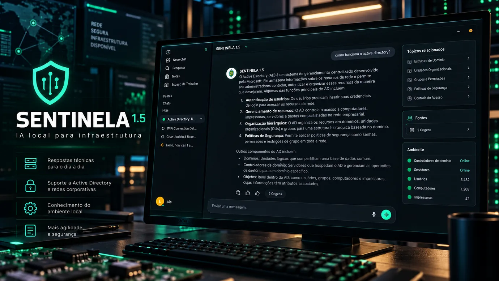

Sentinela
AI.
Ambiente de inteligência artificial auto-hospedado, voltado ao apoio técnico em infraestrutura, com modelos executados localmente e operação em servidores Linux.
Projeto em desenvolvimento. Esta página separa o que o repositório público implementa, experimentos externos e integrações ainda planejadas.

serviços centrais no Compose: Ollama e Open WebUI
execução de modelos na infraestrutura administrada
projeto experimental, com evolução documentada
Fonte: Compose publicado e README do projeto. Não são métricas de disponibilidade nem de desempenho.
O desafio
Em ambientes de infraestrutura, equipes consultam documentação técnica, executam rotinas de diagnóstico e investigam alertas de ferramentas distintas. Soluções de IA dependentes de serviços externos nem sempre se adequam a laboratórios ou redes com conectividade restrita.
O Sentinela explora uma alternativa auto-hospedada: disponibilizar uma interface conversacional e um motor de inferência local, mantendo a infraestrutura sob administração própria e preparando o caminho para integrações operacionais autorizadas.
Minha contribuição
Infraestrutura e implantação
Organização e evolução do ambiente Linux/Docker, definição do Compose de referência, utilização de volumes persistentes e scripts de inicialização, atualização, status e backup.
Experimentação técnica
Testes de modelos locais e exploração de consultas à API do Zabbix em ambiente de laboratório. Os testes de integração mencionados não equivalem a um tool server público concluído.
O repositório público comprova o stack e sua documentação. A extensão das integrações experimentais depende de testes privados não reproduzidos integralmente no código publicado.
Como o núcleo funciona
O projeto usa Docker Compose para executar o Ollama e o Open WebUI. A interface conversa com o serviço de inferência pela rede interna do Compose. Volumes Docker preservam dados da interface e arquivos dos modelos entre recriações dos contêineres.
Entregas técnicas verificáveis
Deploy unificado
O arquivo deploy/compose.yaml é a definição principal dos serviços. A revisão documentada em setembro de 2026 eliminou uma configuração Compose duplicada e alinhou os scripts ao arquivo canônico.
Persistência e backup
Os serviços usam volumes Docker. Há script de backup para armazenar uma cópia dos volumes, a ser utilizada com controle de acesso e políticas apropriadas de retenção e restauração.
Rotinas de administração
Scripts públicos oferecem operações como iniciar, parar, consultar status, atualizar e verificar endpoints do Open WebUI e Ollama.
Validação de configuração
O workflow de CI inclui verificação de sintaxe Bash, ShellCheck e validação da configuração Docker Compose. A existência dessas etapas não é prova de testes de integração completos.
O que funciona e o que evolui
Núcleo local
- Compose com Ollama e Open WebUI.
- Volumes persistentes e configuração por variáveis de ambiente.
- Scripts de operação e validação do Compose.
Integração exploratória
- Experimentação com modelos de linguagem locais.
- Consultas à API do Zabbix realizadas separadamente do código público.
- Resultados de laboratório não apresentados como serviço em produção.
Integrações
- Tool server para Zabbix, incluindo consultas operacionais.
- Integração planejada com API do GLPI.
- Consulta a documentos por RAG local.
Confiabilidade
- Regras de autorização e segurança dos conectores.
- Tratamento de erros e limites de acesso.
- Testes reproduzíveis com dados sintéticos e documentação de resultados.
Consulte a integração Zabbix planejada e a integração GLPI planejada. A documentação pública não afirma que esses conectores estão finalizados.
Auto-hospedagem exige controles
Não presumir isolamento: o Compose público mapeia portas do host, incluindo a porta do Ollama, sem limite explícito a 127.0.0.1. Esse comportamento precisa ser revisto antes de qualquer implantação em ambiente restrito.
Proteção dos dados: segredos devem ficar fora do repositório, o acesso precisa seguir políticas da rede e documentos usados por IA devem ser sanitizados ou autorizados.
Limites de uso: operar localmente não substitui autenticação, segmentação, auditoria ou avaliação da saída dos modelos. Integrações com ferramentas administrativas precisam ser estritamente autorizadas e testadas.
Próximos controles: restringir portas à interface apropriada, revisar autenticação e sessões, limitar privilégios de conectores e validar restauração de backup em ambiente de teste.
Arquivos que sustentam o projeto
A avaliação pode ser reproduzida a partir do repositório. Os arquivos disponíveis registram a organização do stack, as rotinas operacionais e os objetivos de evolução.
Arquitetura e deploy
Definição dos serviços, comunicação entre componentes, volumes e procedimentos documentados.
Consultar arquitetura ↗Histórico de evolução
Registro de mudanças no fluxo de implantação e na estrutura do repositório.
Consultar changelog ↗A imagem de capa é conceitual. Este estudo não utiliza capturas de painéis internos, nomes de servidores, tickets ou endereços IP institucionais.
O que o Sentinela demonstra
O Sentinela combina administração Linux, conteinerização, persistência de dados, scripts operacionais, experimentação com modelos locais e análise de controles de segurança. Seu valor para a área de infraestrutura está no domínio do ciclo de implantação e operação — não apenas no uso de uma interface de chatbot.
O próximo avanço técnico relevante é transformar as integrações exploratórias em conectores reproduzíveis, com testes automatizados, permissões mínimas e dados fictícios.